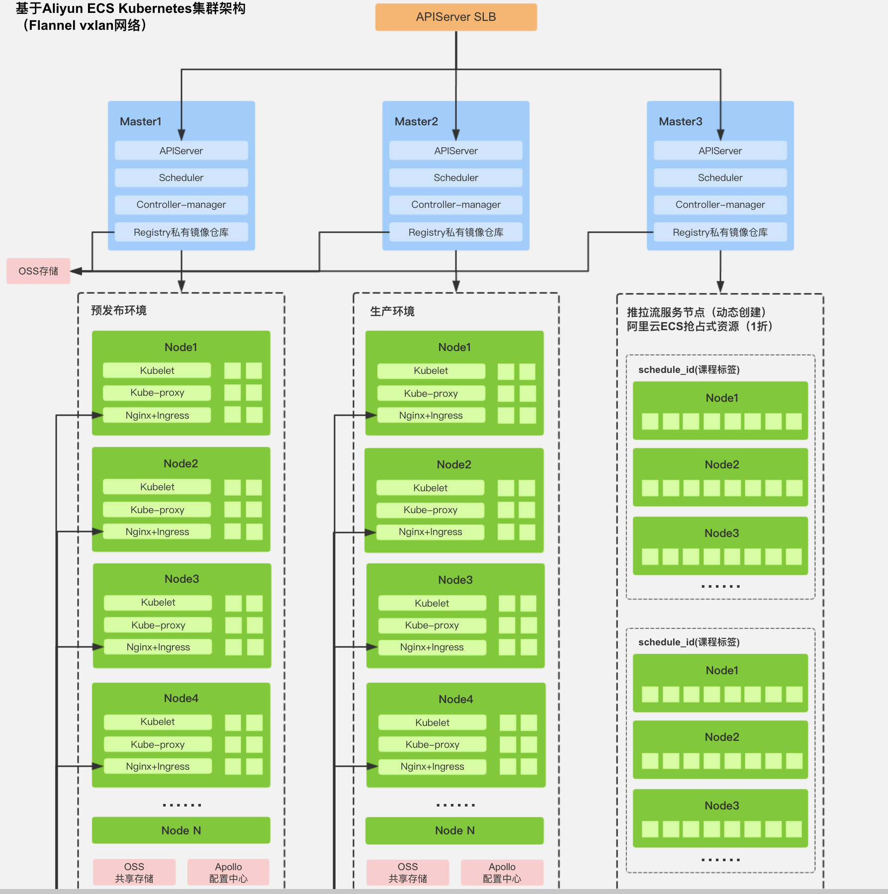

<!DOCTYPE html>
<html>
<head>
    

    

    


    <meta charset="utf-8">
    
    
    
    
    <title>Kubernetes 实践&amp;基础概念总结 | Neo42 | Dont&#39;t Panic,Do not go gentle into that good night :)</title>
    <meta name="viewport" content="width=device-width, initial-scale=1, maximum-scale=1">
    
    <meta name="theme-color" content="#3F51B5">
    
    
    <meta name="keywords" content="Technology">
    <meta name="description" content="本文档将对近期所学习到的k8s知识、概念进行简单的总结，并结合实践加以记录。 Kubernetes 是谷歌开源的容器集群管理系统，是 Google 多年大规模容器管理技术 Borg 的开源版本，主要功能包括：  基于容器的应用部署、维护和滚动升级 负载均衡和服务发现 跨机器和跨地区的集群调度 自动伸缩 无状态服务和有状态服务 广泛的 Volume 支持 插件机制保证扩展性 ….  以上这些功能，几">
<meta name="keywords" content="Technology">
<meta property="og:type" content="article">
<meta property="og:title" content="Kubernetes 实践&amp;基础概念总结">
<meta property="og:url" content="https://yo42.github.io/2019/04/24/Kubernetes-实践-基础概念总结/index.html">
<meta property="og:site_name" content="Neo42">
<meta property="og:description" content="本文档将对近期所学习到的k8s知识、概念进行简单的总结，并结合实践加以记录。 Kubernetes 是谷歌开源的容器集群管理系统，是 Google 多年大规模容器管理技术 Borg 的开源版本，主要功能包括：  基于容器的应用部署、维护和滚动升级 负载均衡和服务发现 跨机器和跨地区的集群调度 自动伸缩 无状态服务和有状态服务 广泛的 Volume 支持 插件机制保证扩展性 ….  以上这些功能，几">
<meta property="og:locale" content="en">
<meta property="og:image" content="https://yo42.github.io/2019/04/24/Kubernetes-实践-基础概念总结/Docker化前后应用发布流程对比.png">
<meta property="og:image" content="https://yo42.github.io/2019/04/24/Kubernetes-实践-基础概念总结/cloud-native-architecutre-mindnode.jpg">
<meta property="og:image" content="https://yo42.github.io/2019/04/24/Kubernetes-实践-基础概念总结/k8s-cluster.png">
<meta property="og:image" content="https://yo42.github.io/2019/04/24/Kubernetes-实践-基础概念总结/k8s核心组件.png">
<meta property="og:image" content="https://blobscdn.gitbook.com/v0/b/gitbook-28427.appspot.com/o/assets%2F-LDAOok5ngY4pc1lEDes%2F-LM_rqip-tinVoiFZE0I%2F-LM_sEq_NuMALezRGMtG%2Fworkflow.png?generation=1537160054044113&alt=media">
<meta property="og:image" content="https://yo42.github.io/2019/04/24/Kubernetes-实践-基础概念总结/业务架构.png">
<meta property="og:updated_time" content="2019-04-25T10:26:53.760Z">
<meta name="twitter:card" content="summary">
<meta name="twitter:title" content="Kubernetes 实践&amp;基础概念总结">
<meta name="twitter:description" content="本文档将对近期所学习到的k8s知识、概念进行简单的总结，并结合实践加以记录。 Kubernetes 是谷歌开源的容器集群管理系统，是 Google 多年大规模容器管理技术 Borg 的开源版本，主要功能包括：  基于容器的应用部署、维护和滚动升级 负载均衡和服务发现 跨机器和跨地区的集群调度 自动伸缩 无状态服务和有状态服务 广泛的 Volume 支持 插件机制保证扩展性 ….  以上这些功能，几">
<meta name="twitter:image" content="https://yo42.github.io/2019/04/24/Kubernetes-实践-基础概念总结/Docker化前后应用发布流程对比.png">
    
        <link rel="alternate" type="application/atom+xml" title="Neo42" href="/atom.xml">
    
    <link rel="shortcut icon" href="/favicon.ico">
    <link rel="stylesheet" href="/css/style.css?v=1.7.2">
    <script>window.lazyScripts=[]</script>

    <!-- custom head -->
    

</head>

<body>
    <div id="loading" class="active"></div>

    <aside id="menu" class="hide" >
  <div class="inner flex-row-vertical">
    <a href="javascript:;" class="header-icon waves-effect waves-circle waves-light" id="menu-off">
        <i class="icon icon-lg icon-close"></i>
    </a>
    <div class="brand-wrap" style="background-image:url(/img/brand.jpg)">
      <div class="brand">
        <a href="/" class="avatar waves-effect waves-circle waves-light">
          
        </a>
        <hgroup class="introduce">
          <h5 class="nickname">Neo</h5>
          <a href="mailto:edyo7024@gmail.com" title="edyo7024@gmail.com" class="mail">edyo7024@gmail.com</a>
        </hgroup>
      </div>
    </div>
    <div class="scroll-wrap flex-col">
      <ul class="nav">
        
            <li class="waves-block waves-effect">
              <a href="/"  >
                <i class="icon icon-lg icon-home"></i>
                Home
              </a>
            </li>
        
            <li class="waves-block waves-effect">
              <a href="/tags"  >
                <i class="icon icon-lg icon-tags"></i>
                Tags
              </a>
            </li>
        
            <li class="waves-block waves-effect">
              <a href="https://yo42.github.io/Aobut-Me/"  >
                <i class="icon icon-lg icon-user"></i>
                About Me
              </a>
            </li>
        
      </ul>
    </div>
  </div>
</aside>

    <main id="main">
        <header class="top-header" id="header">
    <div class="flex-row">
        <a href="javascript:;" class="header-icon waves-effect waves-circle waves-light on" id="menu-toggle">
          <i class="icon icon-lg icon-navicon"></i>
        </a>
        <div class="flex-col header-title ellipsis">Kubernetes 实践&amp;基础概念总结</div>
        
        <div class="search-wrap" id="search-wrap">
            <a href="javascript:;" class="header-icon waves-effect waves-circle waves-light" id="back">
                <i class="icon icon-lg icon-chevron-left"></i>
            </a>
            <input type="text" id="key" class="search-input" autocomplete="off" placeholder="Search">
            <a href="javascript:;" class="header-icon waves-effect waves-circle waves-light" id="search">
                <i class="icon icon-lg icon-search"></i>
            </a>
        </div>
        
        
        <a href="javascript:;" class="header-icon waves-effect waves-circle waves-light" id="menuShare">
            <i class="icon icon-lg icon-share-alt"></i>
        </a>
        
    </div>
</header>
<header class="content-header post-header">

    <div class="container fade-scale">
        <h1 class="title">Kubernetes 实践&amp;基础概念总结</h1>
        <h5 class="subtitle">
            
                <time datetime="2019-04-24T07:33:07.611Z" itemprop="datePublished" class="page-time">
  2019-04-24
</time>


	<ul class="article-category-list"><li class="article-category-list-item"><a class="article-category-list-link" href="/categories/Technology/">Technology</a></li></ul>

            
        </h5>
    </div>

    


</header>


<div class="container body-wrap">
    
    <aside class="post-widget">
        <nav class="post-toc-wrap post-toc-shrink" id="post-toc">
            <h4>TOC</h4>
            <ol class="post-toc"><li class="post-toc-item post-toc-level-1"><a class="post-toc-link" href="#核心组件"><span class="post-toc-number">1.</span> <span class="post-toc-text">核心组件</span></a><ol class="post-toc-child"><li class="post-toc-item post-toc-level-2"><a class="post-toc-link" href="#Kubernetes-整体架构"><span class="post-toc-number">1.1.</span> <span class="post-toc-text">Kubernetes 整体架构</span></a><ol class="post-toc-child"><li class="post-toc-item post-toc-level-3"><a class="post-toc-link" href="#核心组件-1"><span class="post-toc-number">1.1.1.</span> <span class="post-toc-text">核心组件</span></a></li><li class="post-toc-item post-toc-level-3"><a class="post-toc-link" href="#组件通信"><span class="post-toc-number">1.1.2.</span> <span class="post-toc-text">组件通信</span></a><ol class="post-toc-child"><li class="post-toc-item post-toc-level-4"><a class="post-toc-link" href="#C-S-架构"><span class="post-toc-number">1.1.2.1.</span> <span class="post-toc-text">C/S 架构</span></a></li><li class="post-toc-item post-toc-level-4"><a class="post-toc-link" href="#Master"><span class="post-toc-number">1.1.2.2.</span> <span class="post-toc-text">Master</span></a><ol class="post-toc-child"><li class="post-toc-item post-toc-level-5"><a class="post-toc-link" href="#1-Cluster-state-store"><span class="post-toc-number">1.1.2.2.1.</span> <span class="post-toc-text">1. Cluster state store</span></a></li><li class="post-toc-item post-toc-level-5"><a class="post-toc-link" href="#2-API-Server"><span class="post-toc-number">1.1.2.2.2.</span> <span class="post-toc-text">2. API Server</span></a></li><li class="post-toc-item post-toc-level-5"><a class="post-toc-link" href="#3-Controller-Manager"><span class="post-toc-number">1.1.2.2.3.</span> <span class="post-toc-text">3. Controller Manager</span></a></li><li class="post-toc-item post-toc-level-5"><a class="post-toc-link" href="#4-Scheduler"><span class="post-toc-number">1.1.2.2.4.</span> <span class="post-toc-text">4. Scheduler</span></a></li></ol></li></ol></li></ol></li><li class="post-toc-item post-toc-level-2"><a class="post-toc-link" href="#节点（Node）"><span class="post-toc-number">1.2.</span> <span class="post-toc-text">节点（Node）</span></a></li><li class="post-toc-item post-toc-level-2"><a class="post-toc-link" href="#Pod"><span class="post-toc-number">1.3.</span> <span class="post-toc-text">Pod</span></a></li><li class="post-toc-item post-toc-level-2"><a class="post-toc-link" href="#一些实际应用的经验"><span class="post-toc-number">1.4.</span> <span class="post-toc-text">一些实际应用的经验</span></a></li><li class="post-toc-item post-toc-level-2"><a class="post-toc-link" href="#实践"><span class="post-toc-number">1.5.</span> <span class="post-toc-text">实践</span></a><ol class="post-toc-child"><li class="post-toc-item post-toc-level-3"><a class="post-toc-link" href="#使用k8s创建应用"><span class="post-toc-number">1.5.1.</span> <span class="post-toc-text">使用k8s创建应用</span></a></li><li class="post-toc-item post-toc-level-3"><a class="post-toc-link" href="#访问service资源映射的nodeport"><span class="post-toc-number">1.5.2.</span> <span class="post-toc-text">访问service资源映射的nodeport</span></a></li></ol></li><li class="post-toc-item post-toc-level-2"><a class="post-toc-link" href="#架构图"><span class="post-toc-number">1.6.</span> <span class="post-toc-text">架构图</span></a></li><li class="post-toc-item post-toc-level-2"><a class="post-toc-link" href="#参考资料"><span class="post-toc-number">1.7.</span> <span class="post-toc-text">参考资料</span></a></li></ol></li></ol>
        </nav>
    </aside>


<article id="post-Kubernetes-实践-基础概念总结"
  class="post-article article-type-post fade" itemprop="blogPost">

    <div class="post-card">
        <h1 class="post-card-title">Kubernetes 实践&基础概念总结</h1>
        <div class="post-meta">
            <time class="post-time" title="2019-04-24 15:33:07" datetime="2019-04-24T07:33:07.611Z"  itemprop="datePublished">2019-04-24</time>

            
	<ul class="article-category-list"><li class="article-category-list-item"><a class="article-category-list-link" href="/categories/Technology/">Technology</a></li></ul>


            

        </div>
        <div class="post-content" id="post-content" itemprop="postContent">
            <p>本文档将对近期所学习到的k8s知识、概念进行简单的总结，并结合实践加以记录。</p>
<p>Kubernetes 是谷歌开源的容器集群管理系统，是 Google 多年大规模容器管理技术 Borg 的开源版本，主要功能包括：</p>
<ul>
<li>基于容器的应用部署、维护和滚动升级</li>
<li>负载均衡和服务发现</li>
<li>跨机器和跨地区的集群调度</li>
<li>自动伸缩</li>
<li>无状态服务和有状态服务</li>
<li>广泛的 Volume 支持</li>
<li>插件机制保证扩展性</li>
<li>….</li>
</ul>
<p>以上这些功能，几乎完美贴合一套运维架构体系。实现了运维的部署更新，动态扩容，这都交由k8s强大调度系统进行完成。</p>
<p>像以前单体的运维架构，无非就是：</p>
<p>提交代码仓库—&gt;交由CI/CD工具进行源码的编译和打包—&gt;将需要更新的应用包解压至服务器上—&gt;逐一停止业务应用—&gt;逐一启动—&gt;完成更新</p>
<p>以上种种步骤，取决于运维团队的自动化、规范化完善度到达何种程度。有的通过脚本进行管控，有的可能会有运维发布平台。</p>
<figure class="image-bubble">
                <div class="img-lightbox">
                    <div class="overlay"></div>
                    
                </div>
                <div class="image-caption"></div>
            </figure>
<p>目前，Kubernetes 是 DevOps 应用必须掌握的一个平台。如果要构建一套比较不错的devops 体系，那k8s是必不可少的。现在，提到容器第一个联想到的就是k8s，外加微服务时代的盛行，使用和学习k8s再适合不过了。</p>
<figure class="image-bubble">
                <div class="img-lightbox">
                    <div class="overlay"></div>
                    
                </div>
                <div class="image-caption"></div>
            </figure>
<h1 id="核心组件"><a href="#核心组件" class="headerlink" title="核心组件"></a>核心组件</h1><p>Kubernetes 主要由以下几个核心组件组成：</p>
<ul>
<li><p>etcd 保存了整个集群的状态；</p>
</li>
<li><p>apiserver 提供了资源操作的唯一入口，并提供认证、授权、访问控制、API 注册和发现等机制；</p>
</li>
<li><p>controller manager 负责维护集群的状态，比如故障检测、自动扩展、滚动更新等；</p>
</li>
<li><p>scheduler 负责资源的调度，按照预定的调度策略将 Pod 调度到相应的机器上；</p>
</li>
<li><p>kubelet 负责维护容器的生命周期，同时也负责 Volume（CVI）和网络（CNI）的管理；</p>
</li>
<li><p>Container runtime 负责镜像管理以及 Pod 和容器的真正运行（CRI）；</p>
</li>
<li><p>kube-proxy 负责为 Service 提供 cluster 内部的服务发现和负载均衡</p>
</li>
</ul>
<h2 id="Kubernetes-整体架构"><a href="#Kubernetes-整体架构" class="headerlink" title="Kubernetes 整体架构"></a>Kubernetes 整体架构</h2><figure class="image-bubble">
                <div class="img-lightbox">
                    <div class="overlay"></div>
                    
                </div>
                <div class="image-caption"></div>
            </figure>
<h3 id="核心组件-1"><a href="#核心组件-1" class="headerlink" title="核心组件"></a>核心组件</h3><figure class="image-bubble">
                <div class="img-lightbox">
                    <div class="overlay"></div>
                    
                </div>
                <div class="image-caption"></div>
            </figure>
<h3 id="组件通信"><a href="#组件通信" class="headerlink" title="组件通信"></a>组件通信</h3><p>Kubernetes 多组件之间的通信原理为</p>
<ul>
<li>apiserver 负责 etcd 存储的所有操作，且只有 apiserver 才直接操作 etcd 集群</li>
<li>apiserver 对内（集群中的其他组件）和对外（用户）提供统一的 REST API，其他组件均通过 apiserver 进行通信<ul>
<li>controller manager、scheduler、kube-proxy 和 kubelet 等均通过 apiserver watch API 监测资源变化情况，并对资源作相应的操作</li>
<li>所有需要更新资源状态的操作均通过 apiserver 的 REST API 进行</li>
</ul>
</li>
<li>apiserver 也会直接调用 kubelet API（如 logs, exec, attach 等），默认不校验 kubelet 证书，但可以通过 <code>--kubelet-certificate-authority</code> 开启（而 GKE 通过 SSH 隧道保护它们之间的通信）</li>
</ul>
<p>比如典型的创建 Pod 的流程为</p>
<figure class="image-bubble">
                <div class="img-lightbox">
                    <div class="overlay"></div>
                    
                </div>
                <div class="image-caption"></div>
            </figure>
<ol>
<li>用户通过 REST API 创建一个 Pod</li>
<li>apiserver 将其写入 etcd</li>
<li>scheduluer 检测到未绑定 Node 的 Pod，开始调度并更新 Pod 的 Node 绑定</li>
<li>kubelet 检测到有新的 Pod 调度过来，通过 container runtime 运行该 Pod</li>
<li>kubelet 通过 container runtime 取到 Pod 状态，并更新到 apiserver 中</li>
</ol>
<h4 id="C-S-架构"><a href="#C-S-架构" class="headerlink" title="C/S 架构"></a>C/S 架构</h4><p>从宏观上看，<strong>K8S 遵循 C/S 架构</strong>，可以用下面的图来表示：</p>
<figure class="highlight bash"><table><tr><td class="gutter"><pre><span class="line">1</span><br><span class="line">2</span><br><span class="line">3</span><br><span class="line">4</span><br><span class="line">5</span><br><span class="line">6</span><br><span class="line">7</span><br><span class="line">8</span><br><span class="line">9</span><br><span class="line">10</span><br><span class="line">11</span><br><span class="line">12</span><br><span class="line">13</span><br><span class="line">14</span><br></pre></td><td class="code"><pre><span class="line">                               +-------------+                              </span><br><span class="line">                               |             |                              </span><br><span class="line">                               |             |               +---------------+</span><br><span class="line">                               |             |       +-----&gt; |     Node 1    |</span><br><span class="line">                               | Kubernetes  |       |       +---------------+</span><br><span class="line">+-----------------+            |   Server    |       |                      </span><br><span class="line">|       CLI       |            |             |       |       +---------------+</span><br><span class="line">|    (Kubectl)    |-----------&gt;| ( Master )  |&lt;------+-----&gt; |     Node 2    |</span><br><span class="line">|                 |            |             |       |       +---------------+</span><br><span class="line">+-----------------+            |             |       |       </span><br><span class="line">                               |             |       |       +---------------+</span><br><span class="line">                               |             |       +-----&gt; |     Node 3    |</span><br><span class="line">                               |             |               +---------------+</span><br><span class="line">                               +-------------+</span><br></pre></td></tr></table></figure>
<h4 id="Master"><a href="#Master" class="headerlink" title="Master"></a>Master</h4><p><code>Master</code>是整个 <strong>K8S 集群的大脑</strong>，他有几个重要的功能：</p>
<ul>
<li><strong>接收</strong>：<strong>外部的请求</strong>和集群<strong>内部的通知反馈</strong></li>
<li><strong>发布</strong>：对集群整体的<strong>调度和管理</strong></li>
<li><strong>存储</strong>：存储<strong>集群</strong>所需持久化的<strong>状态信息</strong></li>
</ul>
<p><code>Master</code>主要包含以下几个<strong>重要的组成部分</strong>：</p>
<h5 id="1-Cluster-state-store"><a href="#1-Cluster-state-store" class="headerlink" title="1. Cluster state store"></a>1. Cluster state store</h5><p>用来<strong>存储集群所有需要持久化的状态</strong>，并且<strong>提供</strong><code>watch</code><strong>的功能支持</strong>，可以快速的<strong>通知各组件的变更等操作</strong>。</p>
<p>目前 <strong>Kubernetes 的存储层选择是</strong><code>etcd</code>，所以一般情况下，我们直接<strong>以</strong><code>etcd</code><strong>来代表集群状态存储服务</strong>，即<strong>将所有状态存储到</strong><code>etcd</code><strong>实例中</strong>。</p>
<h5 id="2-API-Server"><a href="#2-API-Server" class="headerlink" title="2. API Server"></a>2. API Server</h5><p>这是<strong>整个集群的入口</strong>，类似于人体的感官，<strong>接收外部的信号和请求</strong>，并<strong>将相应的信息写入到</strong><code>etcd</code><strong>中</strong>。</p>
<p>为了<strong>保证安全</strong>，API Server 还<strong>提供了认证相关的功能</strong>，用于<strong>判断客户端是否有权限进行操作</strong>。API Server 支持多种认证方法，不过一般情况下，我们<strong>使用</strong><code>x509</code><strong>证书来进行认证</strong>。</p>
<blockquote>
<p><strong>API Server</strong> 的目标是成为一个<strong>极简的 Server</strong>，<strong>只提供</strong><code>REST</code><strong>操作</strong>，<strong>更新</strong><code>etcd</code>，并充当着<strong>集群的网关</strong>。至于<strong>其他的业务逻辑</strong>，则<strong>通过插件或者其他组件来实现</strong></p>
</blockquote>
<h5 id="3-Controller-Manager"><a href="#3-Controller-Manager" class="headerlink" title="3. Controller Manager"></a>3. Controller Manager</h5><p><strong>Controller Manager</strong> 大概是 K8S 集群中<strong>最繁忙的部分</strong>，它在后台<strong>运行着许多不同的控制器进程</strong>，用来<strong>调节集群的状态</strong>。</p>
<p>当<strong>集群的配置发生改变时</strong>，控制器就会<strong>朝着预期的状态开始工作</strong>。</p>
<h5 id="4-Scheduler"><a href="#4-Scheduler" class="headerlink" title="4. Scheduler"></a>4. Scheduler</h5><p><strong>Scheduler</strong> 是<strong>集群的调度器</strong>，它会<strong>持续关注集群中未被调度的 Pod</strong>，并根据资源可用性、节点亲和性或是其他一些限制条件，<strong>通过绑定的 API 将 Pod 调度/绑定到 Node 上</strong>。</p>
<blockquote>
<p>在这个过程中，<strong>调度程序</strong>一般<strong>只考虑调度开始时 Node 的状态</strong>，而<strong>不考虑在调度过程中 Node 的状态变化</strong></p>
</blockquote>
<h2 id="节点（Node）"><a href="#节点（Node）" class="headerlink" title="节点（Node）"></a>节点（Node）</h2><p>K8s集群中的计算能力由Node提供，最初Node称为服务节点Minion，后来改名为Node。K8s集群中的Node也就等同于Mesos集群中的Slave节点，是所有Pod运行所在的工作主机，可以是物理机也可以是虚拟机。不论是物理机还是虚拟机，工作主机的统一特征是上面要运行kubelet管理节点上运行的容器。</p>
<h2 id="Pod"><a href="#Pod" class="headerlink" title="Pod"></a>Pod</h2><p>K8s有很多技术概念，同时对应很多API对象，最重要的也是最基础的是微服务Pod。Pod是在K8s集群中运行部署应用或服务的最小单元，它是可以支持多容器的。Pod的设计理念是支持多个容器在一个Pod中共享网络地址和文件系统，可以通过进程间通信和文件共享这种简单高效的方式组合完成服务。Pod对多容器的支持是K8s最基础的设计理念。比如你运行一个操作系统发行版的软件仓库，一个Nginx容器用来发布软件，另一个容器专门用来从源仓库做同步，这两个容器的镜像不太可能是一个团队开发的，但是他们一块儿工作才能提供一个微服务；这种情况下，不同的团队各自开发构建自己的容器镜像，在部署的时候组合成一个微服务对外提供服务。</p>
<p>Pod是K8s集群中所有业务类型的基础，可以看作运行在K8s集群中的小机器人，不同类型的业务就需要不同类型的小机器人去执行。目前K8s中的业务主要可以分为长期伺服型（long-running）、批处理型（batch）、节点后台支撑型（node-daemon）和有状态应用型（stateful application）；分别对应的小机器人控制器为Deployment、Job、DaemonSet和StatefulSet。</p>
<p>Pod分类：</p>
<ul>
<li>自主式Pod</li>
<li>由控制器管理的Pod，管理不同类型的Pod资源<ul>
<li>ReplicaSet(替代ReplicationController)</li>
<li>Deployment(只能管理无状态的应用)</li>
<li>StatefulSet(管理有状态的应用)</li>
<li>DaemonSet(在每一个node上运行一个副本)</li>
<li>Job(运行结束自动删除)</li>
<li>Ctonjob(周期性job)</li>
</ul>
</li>
</ul>
<p>其中DaemonSet、Job、Ctonjob是给特殊应用使用，另外Deployment还支持二级控制器HPA(HorizontalPodAutoscaler)，HPA控制器自动监控资源，当前服务能力不能满足时，自动扩展Pod，当Pod资源空闲时，自动回收资源，这些阈值由用户设置。</p>
<p>附上k8s各种对象详细表格:</p>
<p>Kubernetes主要模块概念：</p>
<table>
<thead>
<tr>
<th style="text-align:left">名称</th>
<th style="text-align:left">说明</th>
</tr>
</thead>
<tbody>
<tr>
<td style="text-align:left">Cluster</td>
<td style="text-align:left">Cluster是指由Kubernetes使用一系列的物理机、虚拟机和其他基础资源来运行你的应用程序。</td>
</tr>
<tr>
<td style="text-align:left">Node</td>
<td style="text-align:left">一个node就是一个运行着Kubernetes的物理机或虚拟机，并且pod可以在其上面被调度。</td>
</tr>
<tr>
<td style="text-align:left">Pod</td>
<td style="text-align:left">一个pod对应一个由相关容器和卷组成的容器组。</td>
</tr>
<tr>
<td style="text-align:left">Label</td>
<td style="text-align:left">一个label是一个被附加到资源上的键/值对，例如附加到一个Pod上，为它传递一个用户自定的并且可识别的属性，Label还可以被应用来组织和选择子网中的资源。</td>
</tr>
<tr>
<td style="text-align:left">selector</td>
<td style="text-align:left">selector是一个通过匹配labels来定义资源之间关系得表达式，例如为一个负载均衡的service指定所目标Pod。</td>
</tr>
<tr>
<td style="text-align:left">Replication Controller</td>
<td style="text-align:left">replication controller 是为了保证一定数量被指定的Pod的复制品在任何时间都能正常工作，它不仅允许复制的系统易于扩展，还会处理当pod在机器在重启或发生故障的时候再次创建一个。</td>
</tr>
<tr>
<td style="text-align:left">Service</td>
<td style="text-align:left">一个service定义了访问pod的方式，就像单个固定的IP地址和与其相对应的DNS名之间的关系。</td>
</tr>
<tr>
<td style="text-align:left">Volume</td>
<td style="text-align:left">一个volume是一个目录，可能会被容器作为未见系统的一部分来访问。</td>
</tr>
<tr>
<td style="text-align:left">Kubernetes volume</td>
<td style="text-align:left">构建在Docker Volumes之上,并且支持添加和配置volume目录或者其他存储设备。</td>
</tr>
<tr>
<td style="text-align:left">Secret</td>
<td style="text-align:left">Secret 存储了敏感数据，例如能允许容器接收请求的权限令牌。</td>
</tr>
<tr>
<td style="text-align:left">Name</td>
<td style="text-align:left">用户为Kubernetes中资源定义的名字。</td>
</tr>
<tr>
<td style="text-align:left">Namespace</td>
<td style="text-align:left">Namespace 好比一个资源名字的前缀。它帮助不同的项目、团队或是客户可以共享cluster，例如防止相互独立的团队间出现命名冲突。</td>
</tr>
<tr>
<td style="text-align:left">Annotation</td>
<td style="text-align:left">相对于label来说可以容纳更大的键值对，它对我们来说可能是不可读的数据，只是为了存储不可识别的辅助数据，尤其是一些被工具或系统扩展用来操作的数据。</td>
</tr>
</tbody>
</table>
<h2 id="一些实际应用的经验"><a href="#一些实际应用的经验" class="headerlink" title="一些实际应用的经验"></a>一些实际应用的经验</h2><ul>
<li>在引用一个yaml文件时，请使用–record选项，带了这个选项之后，每次升级的时都会保存到部署的日志里面，这样就提供了回滚一个变更的能力。</li>
<li>部署大多数应用都需要配套一个service对象，如果需要外部访问需要映射NodePort类型</li>
<li>使用git管理k8s yml 可以方便回滚</li>
<li>….</li>
</ul>
<h2 id="实践"><a href="#实践" class="headerlink" title="实践"></a>实践</h2><h3 id="使用k8s创建应用"><a href="#使用k8s创建应用" class="headerlink" title="使用k8s创建应用"></a>使用k8s创建应用</h3><figure class="highlight bash"><table><tr><td class="gutter"><pre><span class="line">1</span><br><span class="line">2</span><br><span class="line">3</span><br><span class="line">4</span><br><span class="line">5</span><br><span class="line">6</span><br><span class="line">7</span><br><span class="line">8</span><br><span class="line">9</span><br><span class="line">10</span><br><span class="line">11</span><br><span class="line">12</span><br><span class="line">13</span><br><span class="line">14</span><br><span class="line">15</span><br><span class="line">16</span><br><span class="line">17</span><br><span class="line">18</span><br><span class="line">19</span><br><span class="line">20</span><br><span class="line">21</span><br><span class="line">22</span><br><span class="line">23</span><br><span class="line">24</span><br><span class="line">25</span><br><span class="line">26</span><br><span class="line">27</span><br><span class="line">28</span><br><span class="line">29</span><br><span class="line">30</span><br><span class="line">31</span><br><span class="line">32</span><br><span class="line">33</span><br><span class="line">34</span><br><span class="line">35</span><br><span class="line">36</span><br><span class="line">37</span><br><span class="line">38</span><br></pre></td><td class="code"><pre><span class="line">cat &gt; nginx-ds.yml &lt;&lt;EOF</span><br><span class="line">apiVersion: v1</span><br><span class="line">kind: Service</span><br><span class="line">metadata:</span><br><span class="line"> name: nginx-ds</span><br><span class="line"> labels:</span><br><span class="line"> app: nginx-ds</span><br><span class="line">spec:</span><br><span class="line"> <span class="built_in">type</span>: NodePort</span><br><span class="line"> selector:</span><br><span class="line"> app: nginx-ds</span><br><span class="line"> ports:</span><br><span class="line"> - name: http</span><br><span class="line"> port: 80</span><br><span class="line"> targetPort: 80</span><br><span class="line">---</span><br><span class="line">apiVersion: extensions/v1beta1</span><br><span class="line">kind: DaemonSet</span><br><span class="line">metadata:</span><br><span class="line"> name: nginx-ds</span><br><span class="line"> labels:</span><br><span class="line"> addonmanager.kubernetes.io/mode: Reconcile</span><br><span class="line">spec:</span><br><span class="line"> template:</span><br><span class="line"> metadata:</span><br><span class="line"> labels:</span><br><span class="line"> app: nginx-ds</span><br><span class="line"> spec:</span><br><span class="line"> containers:</span><br><span class="line"> - name: my-nginx</span><br><span class="line"> image: nginx:1.7.9</span><br><span class="line"> ports:</span><br><span class="line"> - containerPort: 80</span><br><span class="line">EOF</span><br><span class="line"></span><br><span class="line">kubectl create -f nginx-ds.yml</span><br><span class="line">kubectl get pods -o wide|grep nginx-ds</span><br><span class="line">kubectl get svc -o wide|grep nginx-ds</span><br></pre></td></tr></table></figure>
<h3 id="访问service资源映射的nodeport"><a href="#访问service资源映射的nodeport" class="headerlink" title="访问service资源映射的nodeport"></a>访问service资源映射的nodeport</h3><figure class="highlight plain"><table><tr><td class="gutter"><pre><span class="line">1</span><br></pre></td><td class="code"><pre><span class="line">curl k8s-node01:22462</span><br></pre></td></tr></table></figure>
<h2 id="架构图"><a href="#架构图" class="headerlink" title="架构图"></a>架构图</h2><figure class="image-bubble">
                <div class="img-lightbox">
                    <div class="overlay"></div>
                    
                </div>
                <div class="image-caption"></div>
            </figure>
<h2 id="参考资料"><a href="#参考资料" class="headerlink" title="参考资料"></a>参考资料</h2><blockquote>
<ul>
<li><a href="https://jimmysong.io/kubernetes-handbook/concepts/" target="_blank" rel="noopener"><a href="https://jimmysong.io/kubernetes-handbook/concepts/" target="_blank" rel="noopener">https://jimmysong.io/kubernetes-handbook/concepts/</a></a></li>
<li><a href="https://kubernetes.feisky.xyz/he-xin-yuan-li/concepts" target="_blank" rel="noopener"><a href="https://kubernetes.feisky.xyz/he-xin-yuan-li/concepts" target="_blank" rel="noopener">https://kubernetes.feisky.xyz/he-xin-yuan-li/concepts</a></a></li>
</ul>
</blockquote>

        </div>

        <blockquote class="post-copyright">
    
    <div class="content">
        
<span class="post-time">
    Last updated: <time datetime="2019-04-25T10:26:53.760Z" itemprop="dateUpdated">2019-04-25 18:26:53</time>
</span><br>


        
    </div>
    
    <footer>
        <a href="https://yo42.github.io">
            
            Neo
        </a>
    </footer>
</blockquote>

        


        <div class="post-footer">
            
	<ul class="article-tag-list"><li class="article-tag-list-item"><a class="article-tag-list-link" href="/tags/Technology/">Technology</a></li></ul>


            
<div class="page-share-wrap">
    

<div class="page-share" id="pageShare">
    <ul class="reset share-icons">
      <li>
        <a class="weibo share-sns" target="_blank" href="http://service.weibo.com/share/share.php?url=https://yo42.github.io/2019/04/24/Kubernetes-实践-基础概念总结/&title=《Kubernetes 实践&基础概念总结》 — Neo42&pic=https://yo42.github.io/img/yo.jpg" data-title="微博">
          <i class="icon icon-weibo"></i>
        </a>
      </li>
      <li>
        <a class="weixin share-sns wxFab" href="javascript:;" data-title="微信">
          <i class="icon icon-weixin"></i>
        </a>
      </li>
      <li>
        <a class="qq share-sns" target="_blank" href="http://connect.qq.com/widget/shareqq/index.html?url=https://yo42.github.io/2019/04/24/Kubernetes-实践-基础概念总结/&title=《Kubernetes 实践&基础概念总结》 — Neo42&source=" data-title=" QQ">
          <i class="icon icon-qq"></i>
        </a>
      </li>
      <li>
        <a class="facebook share-sns" target="_blank" href="https://www.facebook.com/sharer/sharer.php?u=https://yo42.github.io/2019/04/24/Kubernetes-实践-基础概念总结/" data-title=" Facebook">
          <i class="icon icon-facebook"></i>
        </a>
      </li>
      <li>
        <a class="twitter share-sns" target="_blank" href="https://twitter.com/intent/tweet?text=《Kubernetes 实践&基础概念总结》 — Neo42&url=https://yo42.github.io/2019/04/24/Kubernetes-实践-基础概念总结/&via=https://yo42.github.io" data-title=" Twitter">
          <i class="icon icon-twitter"></i>
        </a>
      </li>
      <li>
        <a class="google share-sns" target="_blank" href="https://plus.google.com/share?url=https://yo42.github.io/2019/04/24/Kubernetes-实践-基础概念总结/" data-title=" Google+">
          <i class="icon icon-google-plus"></i>
        </a>
      </li>
    </ul>
 </div>


    <a href="javascript:;" id="shareFab" class="page-share-fab waves-effect waves-circle">
        <i class="icon icon-share-alt icon-lg"></i>
    </a>
</div>


        </div>
    </div>

    
<nav class="post-nav flex-row flex-justify-between">
  
    <div class="waves-block waves-effect prev">
      <a href="/2019/04/25/Kubernetes-服务暴露-负载均衡/" id="post-prev" class="post-nav-link">
        <div class="tips"><i class="icon icon-angle-left icon-lg icon-pr"></i> Prev</div>
        <h4 class="title">Kubernetes 服务暴露&amp;负载均衡</h4>
      </a>
    </div>
  

  
    <div class="waves-block waves-effect next">
      <a href="/2019/04/23/简单使用Git-Hook/" id="post-next" class="post-nav-link">
        <div class="tips">Next <i class="icon icon-angle-right icon-lg icon-pl"></i></div>
        <h4 class="title">Git Hook实践</h4>
      </a>
    </div>
  
</nav>


    


</article>


</div>

        <footer class="footer">
    <div class="top">
        

        <p>
            
                <span><a href="/atom.xml" target="_blank" class="rss" title="rss"><i class="icon icon-lg icon-rss"></i></a></span>
            
            <span>This blog is licensed under a <a rel="license" href="https://creativecommons.org/licenses/by/4.0/">Creative Commons Attribution 4.0 International License</a>.</span>
        </p>
    </div>
    <div class="bottom">
        <p><span>Neo &copy; 2019</span>
            <span>
                
                Power by <a href="http://hexo.io/" target="_blank">Hexo</a> 
            </span>
        </p>
    </div>
</footer>

    </main>
    <div class="mask" id="mask"></div>
<a href="javascript:;" id="gotop" class="waves-effect waves-circle waves-light"><span class="icon icon-lg icon-chevron-up"></span></a>


<div class="global-share" id="globalShare">
    <ul class="reset share-icons">
      <li>
        <a class="weibo share-sns" target="_blank" href="http://service.weibo.com/share/share.php?url=https://yo42.github.io/2019/04/24/Kubernetes-实践-基础概念总结/&title=《Kubernetes 实践&基础概念总结》 — Neo42&pic=https://yo42.github.io/img/yo.jpg" data-title="微博">
          <i class="icon icon-weibo"></i>
        </a>
      </li>
      <li>
        <a class="weixin share-sns wxFab" href="javascript:;" data-title="微信">
          <i class="icon icon-weixin"></i>
        </a>
      </li>
      <li>
        <a class="qq share-sns" target="_blank" href="http://connect.qq.com/widget/shareqq/index.html?url=https://yo42.github.io/2019/04/24/Kubernetes-实践-基础概念总结/&title=《Kubernetes 实践&基础概念总结》 — Neo42&source=" data-title=" QQ">
          <i class="icon icon-qq"></i>
        </a>
      </li>
      <li>
        <a class="facebook share-sns" target="_blank" href="https://www.facebook.com/sharer/sharer.php?u=https://yo42.github.io/2019/04/24/Kubernetes-实践-基础概念总结/" data-title=" Facebook">
          <i class="icon icon-facebook"></i>
        </a>
      </li>
      <li>
        <a class="twitter share-sns" target="_blank" href="https://twitter.com/intent/tweet?text=《Kubernetes 实践&基础概念总结》 — Neo42&url=https://yo42.github.io/2019/04/24/Kubernetes-实践-基础概念总结/&via=https://yo42.github.io" data-title=" Twitter">
          <i class="icon icon-twitter"></i>
        </a>
      </li>
      <li>
        <a class="google share-sns" target="_blank" href="https://plus.google.com/share?url=https://yo42.github.io/2019/04/24/Kubernetes-实践-基础概念总结/" data-title=" Google+">
          <i class="icon icon-google-plus"></i>
        </a>
      </li>
    </ul>
 </div>


<div class="page-modal wx-share" id="wxShare">
    <a class="close" href="javascript:;"><i class="icon icon-close"></i></a>
    <p>扫一扫，分享到微信</p>
    
</div>


    <script src="//cdn.bootcss.com/node-waves/0.7.4/waves.min.js"></script>
<script>
var BLOG = { ROOT: '/', SHARE: true, REWARD: false };


</script>

<script src="/js/main.min.js?v=1.7.2"></script>


<div class="search-panel" id="search-panel">
    <ul class="search-result" id="search-result"></ul>
</div>
<template id="search-tpl">
<li class="item">
    <a href="{path}" class="waves-block waves-effect">
        <div class="title ellipsis" title="{title}">{title}</div>
        <div class="flex-row flex-middle">
            <div class="tags ellipsis">
                {tags}
            </div>
            <time class="flex-col time">{date}</time>
        </div>
    </a>
</li>
</template>

<script src="/js/search.min.js?v=1.7.2" async></script>


<script async>window.onload=function(){var a=document.createElement('script'),b=document.getElementsByTagName('script')[0];a.type='text/javascript',a.async=!0,a.src='/sw-register.js?v='+Date.now(),b.parentNode.insertBefore(a,b)};</script></body></html>